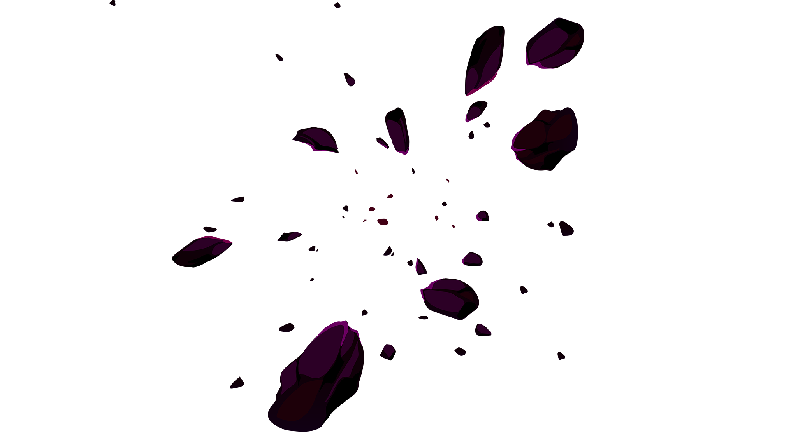

Parallax
 
Parallax scrolling is a web site trend where the background content is moved at a different speed than the foreground content while scrolling.
Parallax is the apparent shift in an object's position when viewed from different perspectives. It can also refer to the difference in an object's apparent direction when seen from two different points that aren't on a straight line with the object.